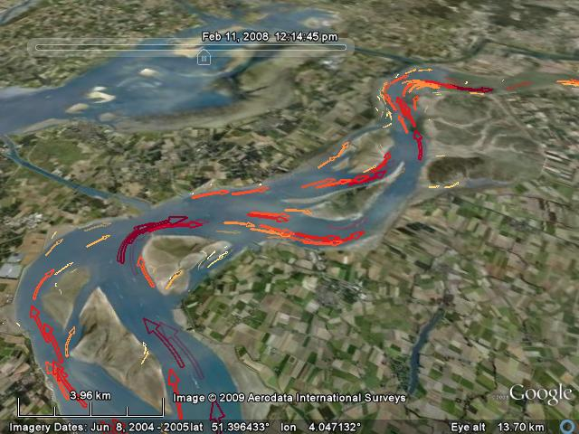

Get some data
To make animated arrwos, you need x, y, u and v data. From a Delt3D trimfile, this usually can be obtained with the following code:
trimfile = vs_use('TRIMFILE_NAME.dat'); G.maskcor = vs_get(trimfile,'TEMPOUT' ,'CODB'); G.maskcor(G.maskcor==-1)=nan; x = vs_get(trimfile,'map-const','XCOR','quiet').*G.maskcor; y = vs_get(trimfile,'map-const','YCOR','quiet').*G.maskcor; for ii = 1:27;[x,y,u0{ii},v0{ii}] = xyveloc(trimfile,ii);end
For this demo, there is alrady some data in OpenEarthTools
load westerscheldeDemoData
whos
Name Size Bytes Class Attributes u0 1x27 75739860 cell v0 1x27 75739860 cell x 487x720 2805120 double y 487x720 2805120 double
Make the arrows
Use KMLcurvedArrows to generate the arrows. 'time' contains the begin and end time of our animation. Only the first two time steps are rendered for this example. Feel free to adjust the inputs!
fname = 'movingArrows.kml'; time = [datenum('11-Feb-2008 09:30:00') datenum('11-Feb-2008 10:00:00')]; KMLcurvedArrows(x,y,u0(1:2),v0(1:2),'time',time,... 'n_arrows',500,'fileName',fname,'interp_steps',2);
arrows001 done arrows002 done arrows003 done
